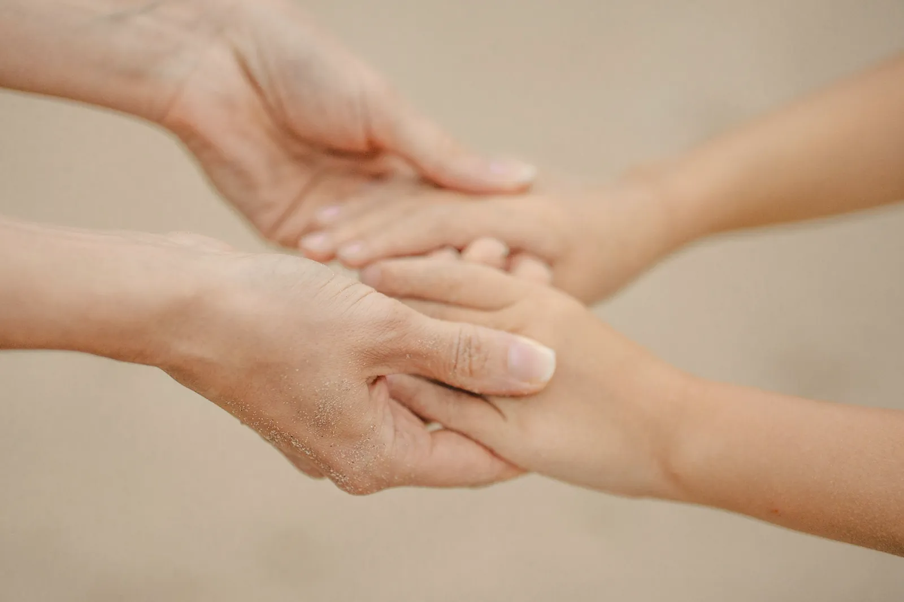
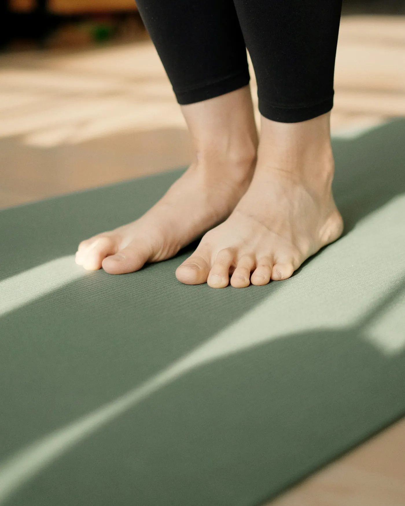
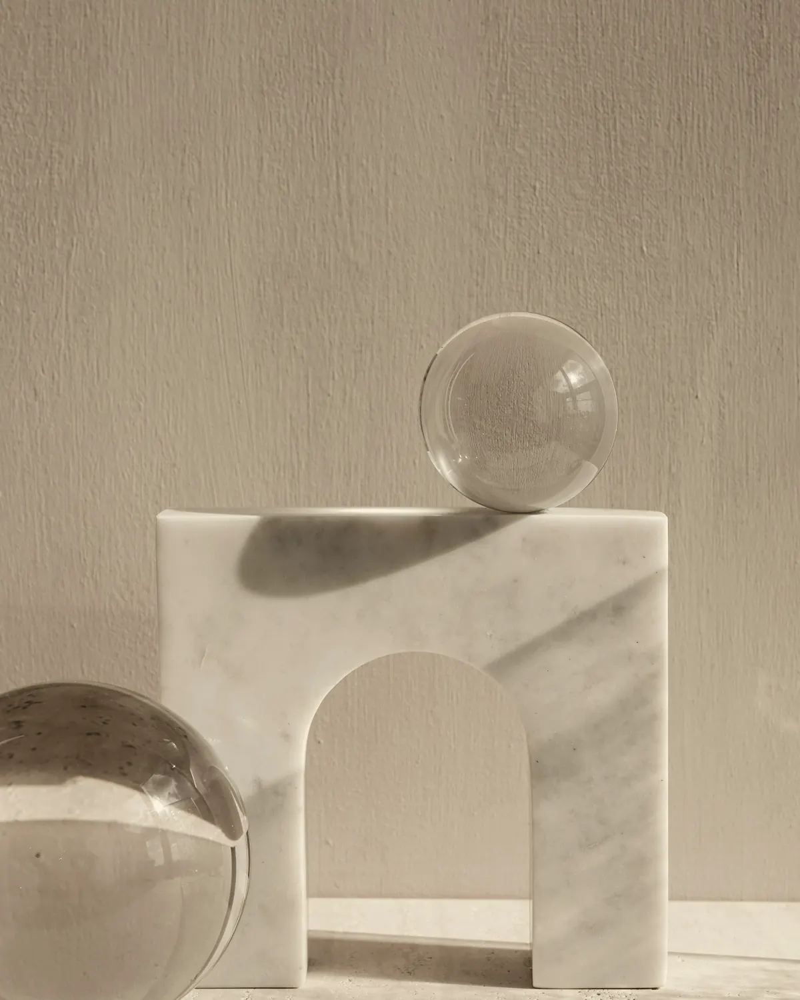
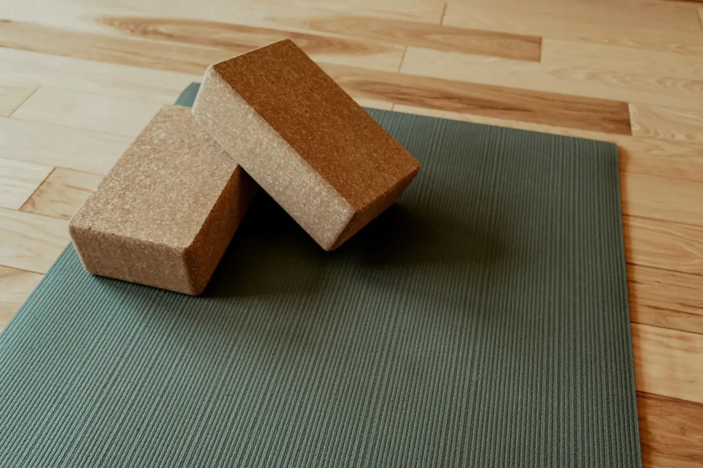

Fisioterapia
Avaliação atenta e intervenções precisas para aliviar a dor, recuperar o movimento e devolver a qualidade de vida.
Demonstração feita para Adriana Abadi Fisioterapia e Pilates. Ainda não é o site oficial.
Centro de Canoas, RS
Um plano feito para o seu corpo, acompanhado de perto, conquista por conquista.
5,0 no Google · 77 avaliações

O que os pacientes contam
É o que uma paciente conta na avaliação dela no Google. A Adriana ouve a história inteira antes de propor um exercício, monta o plano para aquela pessoa e acompanha cada conquista de perto.
Atendimentos
Da dor que não passa à volta aos movimentos do dia a dia, cada plano de tratamento é feito sob medida.

Avaliação atenta e intervenções precisas para aliviar a dor, recuperar o movimento e devolver a qualidade de vida.

Exercícios acompanhados de perto, no tempo de cada um, para fortalecer, alongar e evitar que a dor volte.
Reabilitação depois de cirurgias, como a do ligamento cruzado do joelho (LCA).
Recuperação de fraturas e de lesões ligamentares, etapa por etapa.
Tratamento das dores na coluna e cuidado com a postura no dia a dia.
Para quem precisa, a fisioterapia vai até a sua casa, com horários flexíveis.
Atendimento paciente e carinhoso para manter o equilíbrio, a força e a autonomia.
Fisioterapia também para as crianças, com um plano pensado para a idade delas.
5,0 no Google, em 77 avaliações
“Primeiro de tudo ela me escutou, a maioria dos profissionais não fazem mais isso. Ela foi me orientando em cada conquista.”
Rosycosta M.
“Ótima fisioterapeuta, horários flexíveis e disponibilidade de atendimento em casa.”
Heitor C.
“Tem o perfil de fisioterapeuta que admiro muito: olhar atento, cauteloso e muito clínico.”
Heloisa M.
“Me atendeu de forma precisa num momento difícil com dores que desciam do quadril até o pé, hoje faço pilates com ela prevenindo o problema!”
Carla G.
“É tão bom ser atendida pela Adri! Além de ser uma profissional excelente, é uma ótima companhia.”
Raquel O.
“Profissional super dedicada, cuida da minha mãe que tem 92 anos com muito carinho, só tenho a agradecer.”
Ieda N.
“Adriana é super atenciosa na hora dos exercícios de Pilates, pontual nos horários, respeita o nosso momento na hora de executar os movimentos.”
Mara C.
Com hora marcada
Conte pelo WhatsApp o que você está sentindo e combine o melhor horário, no consultório ou em casa.
R. Vasco da Gama, 124, Centro, Canoas, RS
Recado de quem fez esta página
Sou o Conrado Lemos, desenvolvedor aqui de Canoas. Montei esta página para mostrar como ficaria o seu site. Tudo acima é o que o paciente veria.
R$ 1.000, com o site no ar em até 3 dias, no seu próprio endereço na internet. O pagamento é só na entrega, depois da sua aprovação. O domínio é à parte, cerca de R$ 40 a R$ 55 por ano.
Gostou? É só responder a minha mensagem no WhatsApp.